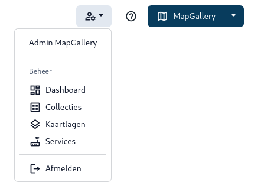

Aan de slag met MapGallery als beheerder
Deze documentatie beschrijft de verschillende onderdelen van de MapGallery-beheeromgeving en hoe je deze effectief kunt gebruiken.
De kaartinrichting in MapGallery wordt beheerd via de beheer omgeving; een complete beheeromgeving waarmee je eenvoudig bronnen kunt koppene en informatielagen beschikbaar kunt stellen.
Hoofdmenu
Rechtsboven in de applicatie vind je een navigatiemenu waarmee je snel toegang krijgt tot delen van de beheer omgeving, zoals het dashboard, kaartlagenbeheer, collecties en services.

Navigatiebalk
De navigatiebalk bovenaan bevat de volgende secties:
- Dashboard: Brengt je terug naar het hoofdoverzicht van het dashboard.
- Toegang: Hier kunnen toegangsniveaus en gebruikersinstellingen worden beheerd.
- Opties: Geeft toegang tot verschillende configuratie-opties.
- Collecties: Toont en beheert kaarten die gegroepeerd zijn in collecties.
- Kaartlagen: Geeft een overzicht van beschikbare kaartlagen.
- Services: Hier worden services beheerd en geconfigureerd.
- Applicatie: Geeft informatie over de versie en componenten.
- Help: Biedt content gerichte toegang tot deze documentatie.